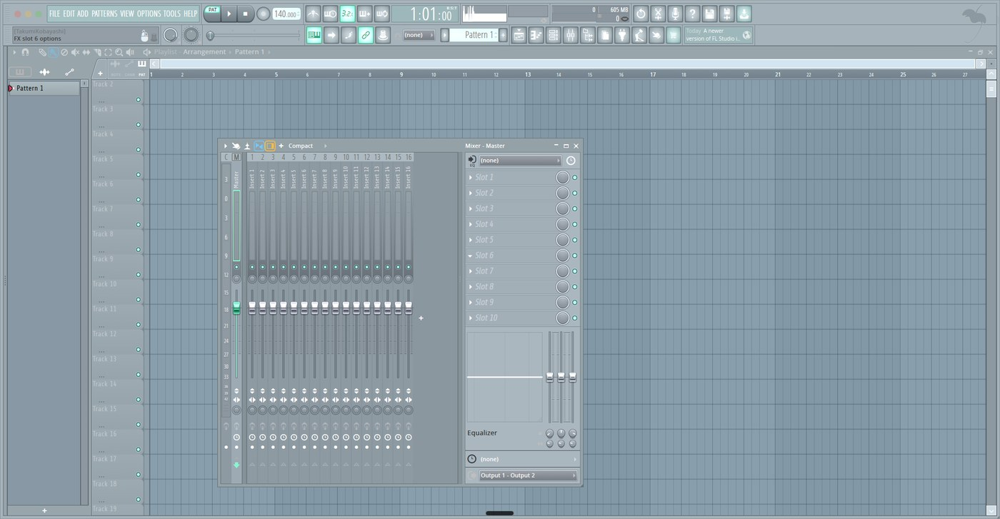

WHY3K が FL Studio で使っている画面です。落ち着いた青灰色で、長く見ていても目が痛くならない明るさに寄せてあります。 ファイルは1つ、置いて選ぶだけです。

FL Studio のテーマは色の設定だけです。Ableton や Serum のスキンと違って、 ボタンや絵そのものは差し替わりません。だから中身は数値が並んだ小さなファイル1つで、 FL の再起動も要りません。選んだ瞬間に色が変わります。
合わなければ (Default) を選べばすぐ戻せます。FL 本体には何も書き換えません。
ZIP を解凍して、中の WHY3K Paper.flstheme を下の場所へコピーするだけです。
~/Documents/Image-Line/FL Studio/Settings/Themes/
⌘⇧G を押して、上のパスを貼り付けて移動WHY3K Paper.flstheme をそこへコピーOPTIONS → Theme settings →
WHY3K Paper を選ぶOPTIONS → Theme settings です。
設定ウィンドウの Theme タブが開いて、入れたテーマが一覧に並びます。
一覧に出てこない — 入れる場所が違う可能性があります。
Settings の中の Themes フォルダ（Skins ではありません）の直下に、
ファイルがそのまま置かれているか確かめてください。
色が変わらない — テーマを選び直すと必ず反映されます。 それでも変わらないときは、FL Studio を開き直してからもう一度選んでください。
ターミナルが分かる人向けです。この1行で終わります。
右上の印を押すとコピーできるので、貼り付けて return。
あとは FL Studio で OPTIONS → Theme settings から選ぶだけです。
cd /tmp && rm -rf w3kfl w3kfl.zip && curl -fsSL -o w3kfl.zip https://why3k.github.io/themes/downloads/WHY3K_Paper_FL_Theme.zip && unzip -oq w3kfl.zip -d w3kfl && cp w3kfl/*/"WHY3K Paper.flstheme" ~/Documents/Image-Line/"FL Studio"/Settings/Themes/ && rm -rf w3kfl w3kfl.zip && echo "入りました。FL の OPTIONS → Theme settings から選んでください"
色は WHY3K が組んだものです。FL Studio 本体の意匠の権利は Image-Line にあります。 個人で使う範囲でどうぞ。再配布や販売はしないでください。